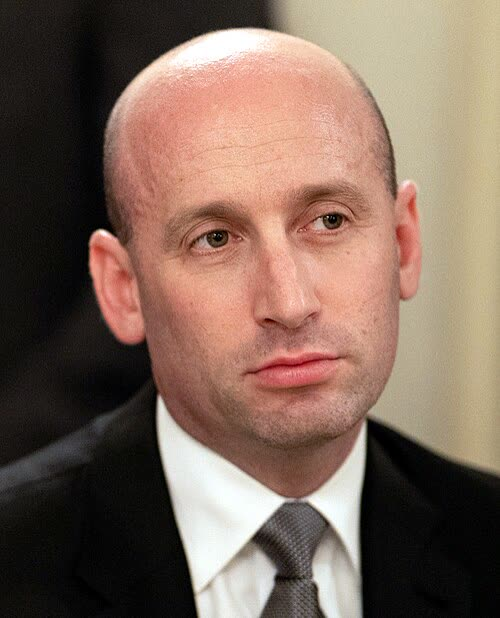

Trump nomina Stephen Miller capo dello staff al posto di Susie Wiles
Il coro regge
Perso il Congresso, Trump non cerca un mediatore: promuove l'uomo della stretta sui migranti e della forza come regola, Groenlandia compresa, e per l'Europa è un cattivo segnale.
Redazione Contrappunto · aggiornato il 06.11.2026


Il capo dello staff della Casa Bianca è il primo collaboratore del presidente degli Stati Uniti (DW): per Euronews Susie Wiles, in carica dall'inizio del secondo mandato di Donald Trump, teneva la disciplina nella Casa Bianca e metteva d'accordo interessi in concorrenza. Martedì 3 novembre i repubblicani hanno perso le elezioni di metà mandato (midterm): Camera e Senato passano ai democratici a gennaio. Venerdì 6 novembre Trump ha annunciato che da lunedì 9 il posto di Wiles va a Stephen Miller, il suo vice, l'uomo della stretta sull'immigrazione. Sulle midterm abbiamo scritto il 4 novembre (i risultati) e il 5 (Trump tiene Hegseth al Pentagono): questo è il primo cambio nella squadra dopo il voto.
Vedi di più: 5 parole spiegate, cosa si racconta
Cosa si raccontaIl Guardian, DW, Euronews e Al Jazeera la leggono come un raddoppio: Trump perde le elezioni e mette al centro della Casa Bianca l'architetto della linea dura sull'immigrazione. Il Guardian scrive che Wiles è stata estromessa; La Stampa definisce Miller «uno dei teorici del nazionalismo bianco». Il Giornale lo chiama «falco» e si aspetta un irrigidimento anche sulla guerra con l'Iran. Fox News e Breitbart riportano l'annuncio, il saluto di Wiles e le congratulazioni dei colleghi; per un funzionario sentito da Fox l'uscita è stata consensuale. [The Guardian] [Deutsche Welle] [Euronews] [Al Jazeera] [La Stampa] [il Giornale] [Fox News] [Breitbart]
- Capo dello staff (chief of staff)
- Il primo collaboratore del presidente americano: guida lo staff della Casa Bianca e siede nelle riunioni che contano. Lo sceglie il presidente. Nel primo mandato Trump ne ha cambiati quattro (Fox, Guardian).
- Midterm
- Le elezioni di metà mandato, due anni dopo quelle presidenziali: si rinnovano tutta la Camera e una parte del Senato. Quest'anno si è votato il 3 novembre.
- Truth Social
- Il social network di Trump, dove il presidente fa molti dei suoi annunci.
- ICE (Immigration and Customs Enforcement)
- L'agenzia federale che arresta ed espelle gli immigrati irregolari. Secondo DW, Miller è tra quelli che ne hanno allargato i compiti.
- Organizzazione politica di Trump (Trump Political Operation)
- La macchina politica del presidente, fuori dalla Casa Bianca. Per La Stampa è un ruolo chiave in vista delle presidenziali del 2028.
- Trump ha annunciato su Truth Social che Stephen Miller, 41 anni, oggi suo vice capo dello staff, prende il posto di Susie Wiles da lunedì 9 novembre. Wiles, 69 anni, prima donna nel ruolo, passa all'organizzazione politica del presidente.
- Arriva tre giorni dopo che i repubblicani hanno perso Camera e Senato alle midterm. A ottobre Trump aveva escluso di sostituire Wiles; oggi ha detto di aver voluto «a change», un cambio.
- Non si sa ancora se Wiles sia uscita per scelta (per la Casa Bianca sì, il Guardian scrive che è stata estromessa), chi prenderà il posto di Miller come vice e che cosa farà Wiles nell'organizzazione politica. Ultimo aggiornamento letto: Euronews, 20:52 ora italiana del 6 novembre.
Il coro regge, lo conferma la Casa Bianca: a Fox News un funzionario presenta Stephen Miller come la scelta di chi vuole invertire l'immigrazione di massa. Fox e Breitbart riportano lodi e saluti; La Stampa lo chiama «uno dei teorici del nazionalismo bianco», un giudizio e non un fatto. Rimpatriare chi non ha titolo per restare è giusto, lì come qui; ma 3.000 arresti al giorno come obiettivo, anche di chi vive lì da decenni, sono un numero da esibire, non una politica. A noi europei pesa altro: il primo collaboratore di Trump sarà chi ha detto in tv che sulla Groenlandia, territorio danese, conta la forza. Quindi Roma e Bruxelles non si illudano: la sconfitta non ammorbidisce Trump. [4] [5] [9] [2]
La verifica punto per punto3 passaggi, 9 fonti
Qui sotto ogni cosa scritta sopra, una per una, con le fonti. Confermato: lo dice un documento originale o più fonti lette. Plausibile: lo riportano fonti serie, ma non abbiamo letto l'originale. Discordante: le fonti danno numeri diversi, e diciamo quali. Ipotesi e Opinione sono il nostro ragionamento, separato dai fatti.
L'annuncio e l'uscita di Wiles
Venerdì 6 novembre Donald Trump ha annunciato su Truth Social che Stephen Miller, «attuale vice capo dello staff dell'amministrazione Trump e uno dei miei consiglieri di massima fiducia, assumerà l'incarico di capo dello staff a partire da lunedì 9 novembre 2026», e che Susie Wiles passa alla sua organizzazione politica (ANSA, Breitbart, Euronews, Al Jazeera). Wiles ha scritto su X: «Today is my last day as White House Chief of Staff», e che servire Trump è stato «the honor of a lifetime» (Fox News, Breitbart). Un funzionario della Casa Bianca ha detto a Fox che la decisione è stata «very amicable» e che Wiles si è dimessa giovedì sera; il Guardian scrive invece che è stata «ousted», estromessa. Ai giornalisti Trump ha detto: «I wanted to make a change» (Guardian). A ottobre, dopo un articolo di Politico sui possibili successori, aveva detto «Zero chance» (Breitbart). Wiles, 69 anni, è stata la prima donna nel ruolo e, con 21 mesi, il capo dello staff di Trump rimasto più a lungo; nel primo mandato ne aveva cambiati quattro (Fox News, Guardian, Euronews). Il vicepresidente JD Vance si è congratulato con Miller (Fox News).
Chi è Stephen Miller
Stephen Miller ha 41 anni ed è con Trump dalla campagna del 2016, dove entrò come autore dei discorsi (DW, Guardian); dal gennaio 2025 è vice capo dello staff (Guardian) e consigliere per la sicurezza interna (Euronews). Nel primo mandato è stato tra i promotori della separazione delle famiglie dei migranti al confine e del divieto d'ingresso dai paesi a maggioranza musulmana (Guardian). Secondo DW ha chiesto che gli agenti federali facciano 3.000 arresti al giorno, anche di migranti che vivono negli Stati Uniti da decenni; ha difeso gli attacchi alle barche dei presunti trafficanti nei Caraibi e l'operazione per catturare il leader venezuelano Nicolás Maduro; a gennaio 2026 ha sostenuto alla CNN che gli Usa hanno diritto a prendersi la Groenlandia, territorio danese: «We live in the real world, Jake, that is governed by strength, that is governed by force, that is governed by power», ha detto al conduttore Jake Tapper. In campagna elettorale ha chiamato i democratici «extremists, freaks and America-hating lunatics» e ha rilanciato accuse di brogli in California e in Alaska che, scrive DW, non sono state provate. Più di cento parlamentari democratici gli hanno dato del «documented white nationalist» in una lettera a Trump (Guardian); La Stampa lo definisce «uno dei teorici del nazionalismo bianco». Per un funzionario sentito da Fox: «A great pick. He has the trust of millions of Americans who understand that reversing mass migration is the crisis of our time».
Tra le righe · lo scontro con il Congresso
Con Miller Trump sceglie lo scontro con il Congresso democratico, non la trattativa. Lo storico dei capi dello staff Chris Whipple, alla CNN, la chiama «It’s almost a declaration of war by Trump» (Guardian); per Al Jazeera i democratici dovrebbero aprire indagini su Miller quando a gennaio prenderanno il controllo delle Camere. Contro questa lettura: l'uscita di Wiles è descritta dalla Casa Bianca come consensuale, e Trump, secondo il Giornale, nei giorni scorsi aveva detto di poter collaborare con la nuova maggioranza.
Ragionamento: Lo sostengono la storia di Miller (DW, Guardian), il fatto che la Casa Bianca stessa presenti la nomina come una scelta sull'immigrazione (Fox) e le parole di Trump sul «cambio» (Guardian). È un'inferenza sulle intenzioni: Miller non ha ancora parlato della nomina, e il nuovo Congresso entra in carica solo a gennaio. Per questo la fiducia è media.
Fonti9, tutte con il link
- Trump nomina Stephen Miller capo di gabinetto al posto di Wiles (ANSA) · consultata il 06.11.2026
- Stephen Miller named by Trump as White House chief of staff (Deutsche Welle) · consultata il 06.11.2026
- Stephen Miller, architect of Trump’s immigration crackdown, to become White House chief of staff (The Guardian) · consultata il 06.11.2026
- Trump names Stephen Miller new White House chief of staff, replacing Susie Wiles (Fox News) · consultata il 06.11.2026
- Trump Announces Stephen Miller Will Take Over as Chief of Staff (Breitbart) · consultata il 06.11.2026
- Trump appoints immigration hardliner Miller as new chief of staff (Euronews) · consultata il 06.11.2026
- Trump appoints adviser Stephen Miller as new White House chief of staff (Al Jazeera) · consultata il 06.11.2026
- Trump sceglie il “falco” Stephen Miller come capo dello staff della Casa Bianca: “Bisogna cambiare” (il Giornale) · consultata il 06.11.2026
- Trump cambia capo dello staff: nominato Stephen Miller, il teorico del nazionalismo bianco (La Stampa) · consultata il 06.11.2026
Testo preparato con strumenti di intelligenza artificiale e pubblicato senza revisione umana. Come lavoriamo